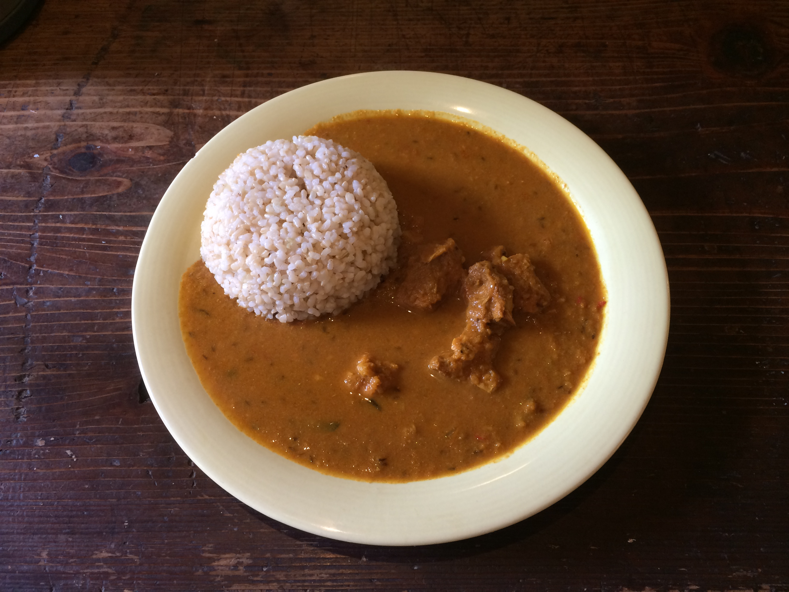

<!DOCTYPE html>
<html lang="ja">
<head>
  <meta charset="UTF-8">
  <meta name="viewport" content="width=device-width, initial-scale=1.0">

  <link rel="stylesheet" type="text/css" href="./css/reset.css">
  <!-- リセットCSS -->
  <link rel="stylesheet" href="./css/common.css">
  <!-- スタイルシート -->
  <link href="https://fonts.googleapis.com/css?family=M+PLUS+Rounded+1c" rel="stylesheet">

  <title>カレーやmomo</title>
</head>
<body>
  <div id="header-and-main-wrapper">
    <header id="header" class="header-wrapper">
      <nav>
        <ul class="nav-menu">
          <li class="menu-list">Home</li>
          <li>&#x1f35b;</li>
          <li class="menu-list">About</li>
          <li>&#x1f35b;</li>
          <li class="menu-list">Menu</li>
          <li>&#x1f35b;</li>
          <li class="menu-list">Access</li>
        </ul>  
      </nav>
      <!-- ナビゲーションメニュー -->

      <div class="logo-wrapper">
        <div class="shop-info">
          <h1>カレーや  <span>momo</span></h1>
        
        </div>
        
      </div>
      <!-- ロゴ・タイトル -->

      <h2 class="shop-copy">あったまる　ゆのまち&#x2668;別府の　カレーや　momo</h2>
    </header>

    <main id="main-content" class="main-content-wrapper">
      <section id="main-img">
        
      </section>
      <!-- トップ写真 -->
      
      <section id="slider"></section>
      <!-- スライドショー -->
      
      <section id="news">
        <h2>NEWS</h2>
        <ul>
          <li>2020.8.1 ウェブサイト開設</li>
          <li>2020.8.1 ウェブサイト開設</li>
          <li>2020.8.1 ウェブサイト開設</li>
          <li>2020.8.1 ウェブサイト開設</li>
        </ul>
      </section>
      
      <section id="access">
        <h2>ACCESS</h2>
        <iframe src="https://www.google.com/maps/embed?pb=!1m18!1m12!1m3!1d3335.6615673278075!2d131.5029637151454!3d33.275351365715885!2m3!1f0!2f0!3f0!3m2!1i1024!2i768!4f13.1!3m3!1m2!1s0x3546a6c375056437%3A0xb6ef4c2b975b4c33!2z44Kr44Os44O844KEbW9tbw!5e0!3m2!1sja!2sjp!4v1598347079193!5m2!1sja!2sjp" width="950" height="600" frameborder="0" style="border:0;" allowfullscreen="" aria-hidden="false" tabindex="0"></iframe>
        
      </section>
    </main>
  </div>
  
  <footer id="footer">
    <small>カレーやmomo</small>
    <address>
      <ul>
        <li>〒874-0943 大分県別府市楠町8-3</li>
        <li>0977-77-1842</li>
        <li>11:00-17:00</li>
        <li>火曜・水曜定休</li>
      </ul>
    </address>
    <!-- 住所・連絡先・電話・営業時間 -->
    
  </footer>
</body>
</html>